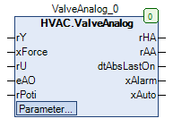

ValveAnalog (FB)¶
FUNCTION_BLOCK ValveAnalog
Kurzbeschreibung¶
Steuerung eines stetigen Ventilantriebs mit Blockierschutzfunktion und stetiger PositionsrückmeldungTypische Anwendung: Regelventil in einem Heizkreis
Darstellung¶

Schnittstellen¶
Eingänge¶
Name Datentyp Wertebereich Initialwert Funktion rY REAL Stellsignal aus Regelung xForce BOOL FALSE Zwangsübersteuerung nach Handübersteuerung rU REAL 0.0 Positionsrückmeldung vom Regelventil eAO HVACTYPES.eManNum HVACTYPES.eManNum.Auto, HVACTYPES.eManNum.Man HVACTYPES.eManNum.Auto Rückmeldung - Automatikbetrieb rPoti REAL Rückmeldung - Stellsignal aus Hardware-Handebene
Ausgänge¶
Name Datentyp Wertebereich Initialwert Funktion rHA REAL Stellsignal nach Handübersteuerung rAA REAL Stellsignal vor Handübersteuerung dtAbsLastOn DATE_AND_TIME Datum / Uhrzeit des letzten Blockierschutzbetriebs xAlarm BOOL Sammelstörmeldung xAuto BOOL Sammelmeldung Automatikbetrieb
Sollwerte / Parameter¶
Name Datentyp Wertebereich Initialwert Funktion udiControlTime UDINT 0 ... 600s 180s Zeitdauer der Positionsüberwachung rControlDiff REAL 7.0% Überwachung der Ventilposition: Maximale Positionsabweichung xControl BOOL TRUE Freigabe der Positionsüberwachung xForceOption BOOL TRUE Zustand vom Ausgang rHA bei Zwangsübersteuerung rAbsMaxLimit REAL 100.0 Oberer Grenzwert für das Stellsignal vor Handübersteuerung rAbsMinLimit REAL 0.0 Unterer Grenzwert für das Stellsignal vor Handübersteuerung udiAbsTime UDINT 10s ... 600s 180s Zeitdauer des Blockierschutzbetriebs in Sekunden tAbsStartTime TOD 00:00:00 - 23:59:59 Uhr 08:00:00 Uhr Zeitpunkt des Blockierschutzbetriebs eAbsDay eDoW eDow.Inactive, eDoW.Monday ... eDoW.Sunday eDoW.Monday Wochentag des Blockierschutzbetriebs rManValue REAL 0.0 Handübersteuerung: Handwert eManModeN eMANNUM eMANNUM.Auto, eMANNUM.Man Handübersteuerung: Betriebsart
Funktionsbeschreibung¶
Stellsignal vor Handübersteuerung rAA¶
Das Stellsignal vor Handübersteuerung rAA wird vom Blockierschutzmodul beeinflusst.
Das Blockierschutzmodul wird durch die Sollwerte / Parameter udiAbsTime, tAbsStartTime und eAbsDay parametriert, als Eingangssignal wird die Positionsrückmeldung vom Regelventil rU verwandt.
Die minimale Änderung der Ventilposition zur Sperrung der Blockierschutzfunktion ist auf 10.0% fixiert.
Das Stellsignal vor Handübersteuerung rAA ist durch die beiden absoluten Grenzwerte rAbsMinLimit und rAbsmaxLimit begrenzt.
Die Positionsrückmeldung vom Regelventil rU darf durch das Stellsignal aus Regelung rY ersetzt werden, falls keine Positionsrückmeldung vorhanden ist.
Stellsignal nach Handübersteuerung rHA¶
Das Stellsignal nach Handübersteuerung rHA wird durch den Ausgang des Blockierschutzmoduls, das Stellsignal aus Regelung rY, die Handübersteuerung und die
Zwangssteuerung beeinflusst.
eManModeN Blockierschutzprozess xForce xForceOption rHA Hinweise eMANNUM.Auto FALSE FALSE X rY Automatikbetrieb mit passivem Blockierschutzprozess eMANNUM.Auto TRUE FALSE X Ausgang des Blockierschutzprozesses Automatikbetrieb mit aktivem Blockierschutzprozess eMANNUM.Man X FALSE X rManValue Handübersteuerung X X TRUE FALSE 0.0 Zwangsübersteuerung 0.0% X X TRUE TRUE 100.0 Zwangsübersteuerung 100.0%
Legende: X = beliebig
Positionsüberwachung¶
Die Positionsüberwachung kann freigegeben ( xControl = TRUE ) oder gesperrt werden ( xControl = FALSE ).
Bei freigegebener Positionsüberwachung wird permanent der Betrag der Differenz zwischen dem Stellsignal nach Handübersteuerung rHA und der Positionsrückmeldung vom Regelventil rU ermittelt
und mit dem Grenzwert rControlDiff verglichen.
Überschreitet diese Differenz permanent während einer Meldeverzögerung udiControlTime den Grenzwert, so wird ein Alarmsignal erzeugt, falls
gleichzeitig die Rückmeldung - Automatikbetrieb eAO den Automatikbetrieb ( eAO = HVACTYPES.eManNum.Auto ) signalisiert.
Dieses Alarmsignal wird mit höchster Priorität am Ausgang sStatus im Klartext dargestellt
und gleichzeitig zum Ausgang Sammelstörmeldung xAlarm übertragen ( xAlarm = TRUE ).
Das Alarmsignal wird wieder deaktiviert ( xAlarm = FALSE ), sobald die Differenz den Grenzwert erstmalig wieder unterschreitet.
Positionsrückmeldung vom Regelventil rU¶
Die Positionsrückmeldung vom Regelventil rU darf durch das Stellsignal aus Regelung rY ersetzt werden, falls keine Positionsrückmeldung vorhanden ist.
Blockierschutzmodul¶
Das Blockierschutzmodul wird durch das numerische Blockierschutzmodul mit einstellbarer Zeitdauer ( FB: AbsA ) realisiert.
Die Zeitdauer udiAbsTime, der Zeitpunkt todAbsStartTime und der Wochentag eAbsDay sind einstellbar.
Die Mindestlaufzeit zur Sperrung des Blockierschutzbetriebs beträgt 30s.
Der Zeitstempel (Datum / Uhrzeit) des letzten Blockierschutzbetriebs dtAbsLastOn steht zur Verfügung.
Sammelmeldung Automatikbetrieb xAuto¶
Die Sammelmeldung Automatikbetrieb xAuto wird aktiviert ( = TRUE ), falls der Eingang eAO den Wert HVACTYPES.eManNum.Auto und der Sollwert / Parameter eManModeN
den Wert eMANNUM.Auto enthält.
In alle übrigen Fällen ist die Sammelmeldung Automatikbetrieb xAuto nicht aktiviert ( = FALSE ).
Zwangsübersteuerung xForce¶
Die Zwangsübersteuerung wirkt direkt auf den Ausgang rHA. Mit dem Parameter xForceOption wird festgelegt, welchen Zustand der Ausgang rHA bei TRUE am Eingang xForce einnimmt.
Bei xForceOption = FALSE
Befindet sich der Eingang xForce auf TRUE, dann wird der Ausgang rHA auf 0 gesetzt.
Bei xForceOption = TRUE
Befindet sich der Eingang xForce auf TRUE, dann wird der Ausgang rHA auf 100 gesetzt.
Visualisierung¶
Codesys¶
- InOut:
Scope Name Type Initial Comment Input rY REAL Stellsignal aus Regelung xForce BOOL FALSE Zwangsübersteuerung nach Handübersteuerung rU REAL 0 Positionsrückmeldung vom Regelventil eAO eManNum HVACTYPES.eManNum.Auto Rückmeldung - Automatikbetrieb rPoti REAL Rückmeldung - Stellsignal aus Hardware-Handebene Output rHA REAL Stellsignal nach Handübersteuerung rAA REAL Stellsignal vor Handübersteuerung dtAbsLastOn DT Datum / Uhrzeit des letzten Blockierschutzbetriebs xAlarm BOOL Sammelstörung xAuto BOOL Sammelmeldung Automatikbetrieb Input udiControlTime UDINT 200 Zeitdauer der Positionsüberwachung rControlDiff REAL 7 Überwachung der Ventilposition: Maximale Positionsabweichung xControl BOOL TRUE Freigabe der Positionsüberwachung xForceOption BOOL TRUE Zustand vom Ausgang rHA bei Zwangsübersteuerung rAbsMaxLimit REAL 100 Oberer Grenzwert für das Stellsignal vor Handübersteuerung rAbsMinLimit REAL 0 Unterer Grenzwert für das Stellsignal vor Handübersteuerung udiAbsTime UDINT 180 Zeitdauer des Blockierschutzbetriebs in Sekunden todAbsStartTime TOD TIME_OF_DAY#8:0 Zeitpunkt des Blockierschutzbetriebs eAbsDay eDoW eDow.Monday Wochentag des Blockierschutzbetriebs rManValue REAL 0 Handübersteuerung: Handwert eManModeN eMANNUM eMANNUM.Auto Handübersteuerung: Betriebsart